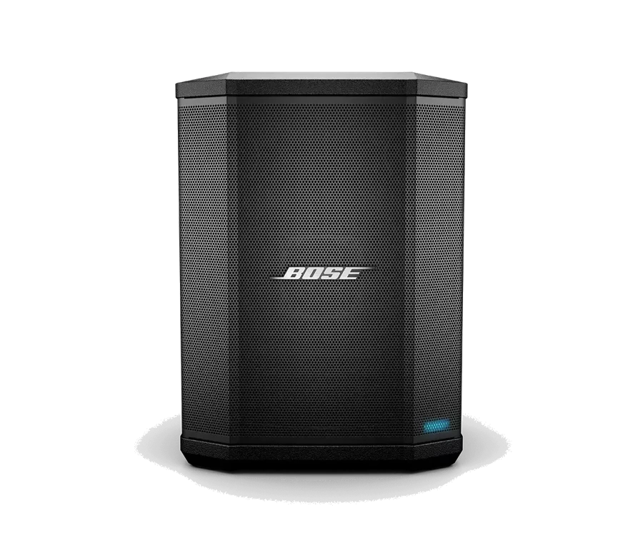
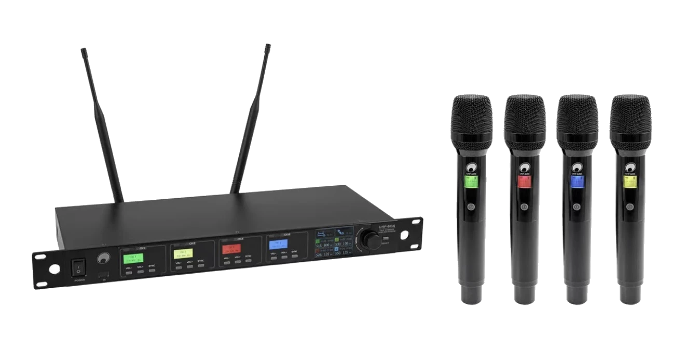

Symbolszene (KI)
Symbolszene (KI)
Wer traut sich als Nächstes?
Karaoke für Ihre Firmenfeier, Hochzeit oder Geburtstag
Song-Battle · Music-Quiz
Mehr als tausend Titel
Profi-Sound statt Bluetooth-Box
JBL PartyBox mit Mikro
oder große Anlage auf Stativen

Lautsprecher
auf Stativen

bis zu 4
Funkmikros
Texte auf LCD-Monitor oder Beamer
Auf der Hauptbühne oder im Nebenraum
Karaoke mieten
Allein oder zum
DJ-Abend dazu
dj-kolja-one.de
Link in der Bio